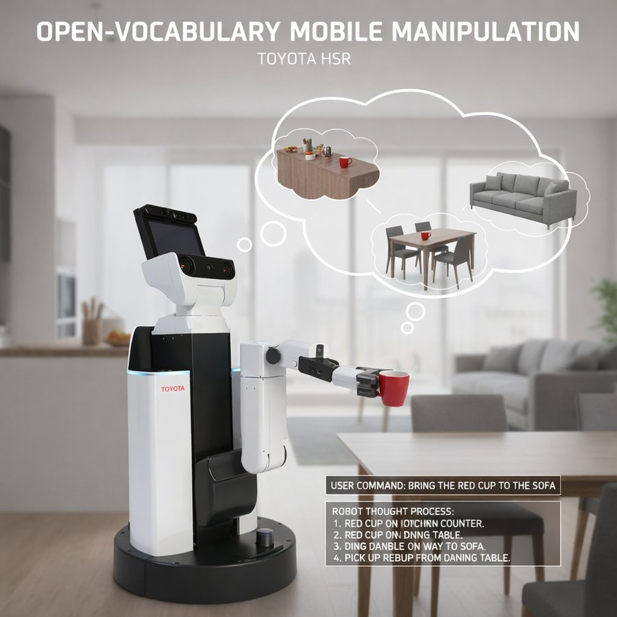

Open-Vocab Mobile Manipulation

You tell the robot what to fetch in plain language. It has to work out which object you meant in a room it has only scanned once, drive there, and pick the thing up. No fixed object list, no per-object training.
The room is represented as a scene graph built from an iPad scan. Mask3D and SAM 3 segment the scan into instances, each becoming a node with a label and a pose, so a phrase like the red cup on the sofa resolves to a node and a coordinate rather than to a pixel in a live camera frame.
Inference runs in Dockerised containers that talk over HTTP. The heavy models stay off the robot's runtime and can be versioned and restarted independently of the control stack, which matters when the segmentation model changes more often than the robot does.
Grasping is two-phase: a geometric proposal first, since most household objects do not need anything cleverer, and AnyGrasp when the geometry is ambiguous. Navigation is Nav2.
The core is pure Python with ROS 2 as a thin adapter around it, so the interesting parts can be tested without a robot in the loop. Work in progress.